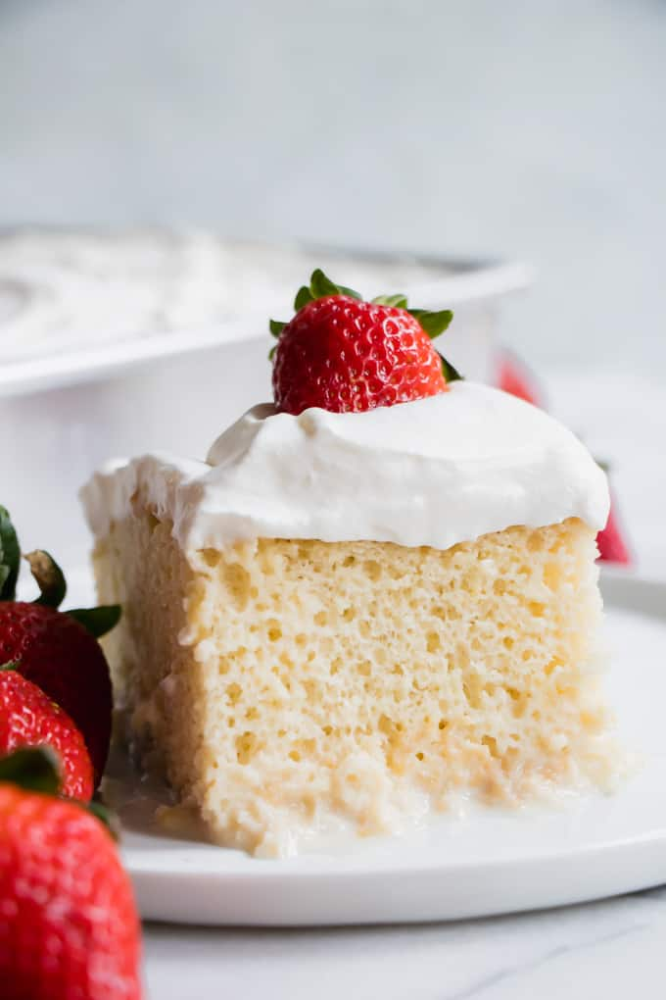

Tres Leches Cake

Description
A tres leches cake or three milks cake is a sweet and light sponge cake.
The cake gets its name from the use of evaporated milk, sweetened condensed milk, and heavy cream.
The unique airy texture and moisture makes it popular with many.
Ingredients
- 1 can sweetened condensed milk
- 1 can evaporated milk
- 1/3 cup milk
- 1 tsp. vanilla
- 5 eggs
- 1/4 tsp. salt
- 1/2 tsp. baking powder
- 1 cup flour
- 1 pint heavy cream
- 3 tbsp. sugar
Steps
-
Preheat oven to 350 Fahrenheit, coat 9x13 inch pan with cooking spray.
-
Combine flour, baking powder, and salt in a large bowl. Separate eggs.
-
Beat egg yolks with 3/4 cup sugar on high speed until yolks are pale yellow.
Stir in milk and vanilla. Pour egg yolk mixture over he flour mixture and stir very gently until combined.
-
Beat egg whites on high speed until soft peaks form.
With the mixer on, pour in remaining 1/4 cup sugar and beat until egg whites are stiff but not dry.
-
Fold egg white mixture into the batter very gently until just combined.
Pour into prepared pan and spread to even out the surface.
-
Bake for 35 to 45 minutes or until a toothpick comes out clean.
Turn cake out onto a rimmed platter and allow to cool.
-
Combine condensed milk, evaporated milk, and heavy cream in a small pitcher.
When cake is cool, pierce the surface with a fork several times.
Slowly drizzle all but about 1 cup of the milk mixture.
-
Allow the cake to absorb the milk mixture for 30 minutes.
To ice the cake, whip 1 pint heavy cream with 3 tablespoons of sugar until thick and spreadable.
-
Spread over the surface of the cake.
Decorate cake with whole or chopped maraschino cherries. Cut into squares and serve.